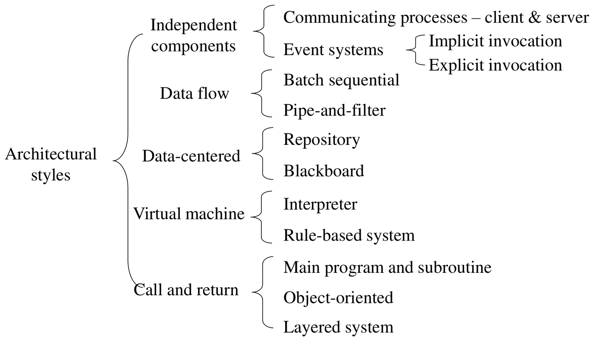
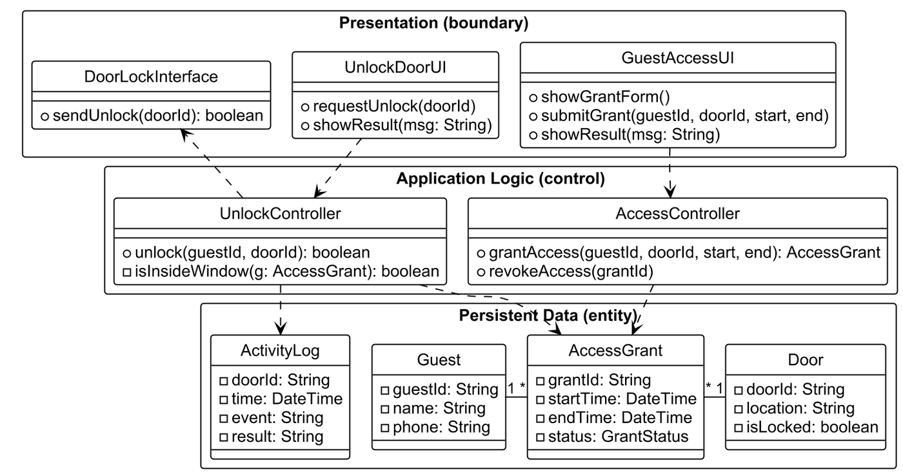

While requirements analysis captures the problem domain, design synthesizes the technical solution. Design is executed across two distinct levels of abstraction:
- System Design (Software Architecture): Decomposes the macro system into major subsystems, establishes communication protocols, selects architectural styles, and assigns hardware/software topologies.
- Object Design (Detailed Design): Refines individual subsystems into concrete classes, defines method signatures, and applies object-oriented design patterns.
Software Architecture is the fundamental organization of a system embodied in its components, their relationships to each other and to the environment, and the principles guiding its design and evolution (IEEE 1471). Architecture establishes the structural foundation that dictates whether a system can achieve its non-functional requirements (performance, scalability, security, availability, and maintainability).
1. Architectural Design Principles
High-quality software architecture is governed by five foundational design principles:
| Architectural Principle | Definition | Failure Mode if Violated |
|---|---|---|
| High Cohesion | Every component or module encapsulates a single, tightly-focused set of related responsibilities. | “God Classes” that perform unrelated operations, making modification risky and error-prone. |
| Low Coupling | Dependencies between distinct subsystems are minimized, explicit, and mediated through abstract interfaces. | “Spaghetti Code” and Shotgun Surgery: modifying one module triggers cascading breakages across the entire system. |
| Separation of Concerns (SoC) | Distinct technical and business concerns (e.g. user interface, business logic, persistence) reside in decoupled modules. | Presentation logic directly executing raw SQL queries or hardcoding physical device drivers. |
| Open-Closed Principle (OCP) | Software artifacts should be open for extension, but closed for modification. | Having to rewrite existing, tested core classes every time a new feature or algorithm variant is introduced. |
| Program to an Interface, Not an Implementation | Clients depend on abstract contracts (interface or
abstract superclass) rather than concrete implementation classes. |
Inability to swap algorithms, database backends, or mock services during unit testing. |
2. Architectural Styles Catalog
An architectural style provides a proven, reusable template specifying a family of systems in terms of component types, connector topologies, and structural constraints:

| Architectural Style | Structural Topology | Key Strengths | Critical Trade-offs | Ideal Applications |
|---|---|---|---|---|
| Layered Architecture | Hierarchical tiers where each layer provides services to the layer immediately above it and consumes services from the layer below. | Strong separation of concerns; low coupling; easy component swappability. | Performance overhead due to repeated call indirection across layers. | Enterprise management systems, operating system kernels. |
| Client-Server | Centralized server nodes provide shared services/resources to distributed client nodes over a network. | Centralized data management, access control, and business rule enforcement. | Server represents a single point of failure and potential throughput bottleneck. | Web platforms, email services, multi-user database applications. |
| Three-Tier (3-Tier) | Strict physical/logical separation into Presentation Tier, Business Logic Tier, and Data Storage Tier. | Independent scalability of tiers (e.g. scaling application servers independently of database clusters). | Network serialization latency and deployment configuration complexity. | Enterprise web applications, e-commerce portals. |
| Pipe-and-Filter | Data flows as a continuous stream through independent transformation nodes (filters) connected by communication channels (pipes). | High throughput, reusability of filters; easily parallelized. | Inefficient for interactive systems; parsing/serialization overhead between filters. | Compilers, multimedia signal processing, ETL data pipelines. |
| Event-Driven (Pub/Sub) | Decoupled components interact asynchronously by broadcasting events onto an event bus to subscribed listeners. | Extreme decoupling; highly scalable and adaptable to dynamic topologies. | Non-deterministic message ordering; difficult to debug and trace global control flow. | Real-time sensor monitoring, financial trading engines, IoT networks. |
| Peer-to-Peer (P2P) | Decentralized nodes act simultaneously as both resource clients and resource servers. | Massive fault tolerance (no single point of failure); high aggregate bandwidth. | Complex decentralized consensus and security; vulnerable to malicious node churn. | BitTorrent file distribution, blockchain networks. |
3. Mapping Non-Functional Requirements to Architecture
In system design, architectural styles are evaluated against non-functional quality requirements (NFRs):
| Targeted Non-Functional Requirement | Architectural Strategy & Alternative Style | Mechanism of Realization |
|---|---|---|
| High Concurrency & Scalability | Replicated Multi-Tier with Load Balancer | Deploying stateless application servers behind a reverse proxy / load balancer distributes incoming user requests horizontally. |
| Continuous High Availability (Fault Tolerance) | Active-Passive / Active-Active Clustered Nodes | Redundant server nodes continuously heartbeat; automated failover switches traffic to standby nodes within milliseconds of a primary node crash. |
| High Modifiability & Maintainability | Strict 4-Layer Architecture with Dependency Inversion | Business domain entities remain insulated from changes in external UI frameworks or underlying relational databases. |
| Stream Processing Throughput | Pipe-and-Filter Pipeline | Filters execute concurrently on multi-core processors, processing data chunks in a streaming pipeline without blocking for full-dataset loading. |
| Support for Multiple Divergent User Interfaces | Model-View-Controller (MVC) | Decouples the underlying business Model from multiple presentation Views (mobile app, web portal, desktop console). |
4. The Four-Layer Architecture and Detailed Class Mapping
The most widely adopted architecture in enterprise software is the Four-Layer Architecture:

- Presentation (User Interface) Layer:
- Hosts all
<<boundary>>classes interacting with human users and external peripherals (GUI windows, REST API controllers, Web forms).
- Hosts all
- Application (Service / Workflow) Layer:
- Hosts
<<control>>classes managing transaction boundaries and orchestrating use-case execution flows.
- Hosts
- Domain (Business Logic) Layer:
- Hosts
<<entity>>classes encapsulating business state, structural invariants, and fundamental domain algorithms.
- Hosts
- Technical Services (Infrastructure / Data) Layer:
- Hosts database repositories, hardware drivers, network sockets, and third-party API adapters.
[!IMPORTANT] The Downward Dependency Rule: In a strictly layered architecture, dependencies must point downwards only.
- Presentation calls Application; Application calls Domain; Domain calls Infrastructure.
- A higher layer must NEVER be called directly by a lower layer. If a lower layer must notify a higher layer (e.g. data arrival from a socket), it must use the Observer Pattern or dependency inversion to avoid upward coupling!
5. Official Tutorial Problems
Tutorial 6 Q1: Grain Elevator System four-layer architecture and detailed class diagram
Question: Consider the Grain Elevator System (GES) analysis classes developed in Tutorial 3: (a) Organize the classes into a Four-Layer Architecture (Presentation, Application, Domain, and Technical Services). (b) Construct a detailed class diagram specifying typed attributes, method signatures, and inter-layer dependency relationships.
Solution:
Part (a): Layer Allocation of BCE Classes
- Presentation Layer
(
<<boundary>>):GESMainUI,ShipmentInterface,AllocationInterface,ManualAllocationInterface. - Application Layer
(
<<control>>):ElevatorManager,ShipmentManager,AllocationManager,ManualAllocationManager. - Domain Layer (
<<entity>>):Shipment,GrainArrivalShipment,DepartureShipment,Silo,SiloAllocation. - Technical Services Layer (Infrastructure):
DatabaseGateway,WeighbridgeDriver,AtmosphericSensorDriver.
Part (b): Detailed Layered Class Diagram

Architectural Verification Rules:
- Zero Boundary-to-Entity Invocations:
ShipmentInterface(Presentation) invokesShipmentManager(Application); it never directly accessesShipmentorSilo(Domain). - Downward Control Flow: User clicks in
ShipmentInterfacetrigger methods inShipmentManager.ShipmentManagerinstantiates and modifiesGrainArrivalShipmentdomain entities. - Infrastructure Decoupling:
AllocationManagerretrieves ambient temperature and moisture by invoking an interfaceISensorDriverimplemented byAtmosphericSensorDriverin the Technical Services Layer, preserving domain independence.